Five moves: clean the reads, build the graph, walk it, polish the contigs, measure the assembly.
Learning objectives
- Distinguish de novo assembly from resequencing and explain when each is the right problem to solve.
- Describe the six stages of a typical assembly pipeline from raw reads to polished scaffolds.
- Reason about coverage — including its Poisson distribution and the consequences of low-coverage regions — for a given sequencing run.
- Explain how k-mer error correction works and why it's a prerequisite for graph construction.
- Construct a small de Bruijn graph by hand from short reads and read off the contigs.
- Compare de Bruijn graphs and overlap graphs on the axes of complexity, runtime, and read-length suitability.
- Identify the three main topological signatures of errors in an assembly graph — tips, bubbles, and tangles — and describe how assemblers resolve each.
- Interpret N50, NG50, and related metrics, and state their known failure modes.
Part 1 · 30 min The Assembly Problem
1.1 Why assemble?
Lecture 2 ended with a pile of reads aligned against a reference genome. That assumes a reference exists — and for humans, mice, E. coli, and a few hundred other well-studied organisms, one does. For everything else — a soil microbe nobody has sequenced before, a tumor with structural variants not in any reference, a novel viral isolate from a patient swab — there is no reference to align to. You have to reconstruct the genome from the reads themselves.
That reconstruction is assembly. Given millions of short reads drawn (with errors) from an unknown genome, the assembler outputs its best guess at the original sequence: a set of long strings called contigs that together cover as much of the genome as the data allows, with gaps wherever the data does not.
1.2 De novo vs resequencing
Two problems sound similar and are often confused.
Resequencing is what Lecture 2 covered. You have a reference, the sample is expected to be nearly identical to it, you align the reads to the reference, and the output is a list of differences (variants). The hard part is fast alignment; the biology is known. This is how 23andMe, clinical diagnostic panels, and most of human population genetics work.
De novo assembly is what this lecture covers. You do not have a reference. Or the sample differs from the reference so much that aligning would miss most of what's interesting — a cancer with large structural rearrangements, a new bacterial species, a plant with a recent whole-genome duplication. The hard part is reconstruction itself; there is no template to match against.
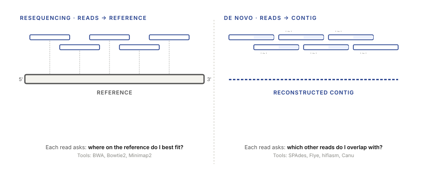
1.3 The typical assembly pipeline
An assembly run is rarely a single program. It's a pipeline of six stages, and production assemblers like SPAdes, Flye, and Canu are orchestrators that run roughly this sequence:
- Input QC. Adapter trimming, length filtering, per-read quality trimming. Same tools as Lecture 1 —
fastp,trim_galore. - Error correction. Clean up systematic read errors before they poison the graph. Tools:
BFC,Lighter, SPAdes's built-in BayesHammer. §2.3. - Graph construction. Build the de Bruijn graph (for short reads) or the overlap graph (for long reads). §3.
- Graph cleanup. Remove tips, collapse bubbles, simplify tangles. §4.2.
- Contig construction. Walk the remaining graph to extract confident linear sequences. §4.1.
- Scaffolding. Use paired-end or long-range information to link contigs across gaps. §4.4.
- (Optional) Polishing. Align the reads back to the assembly and correct any residual errors — usually with a different tool class,
Pilonfor short reads orMedaka/Raconfor long reads.
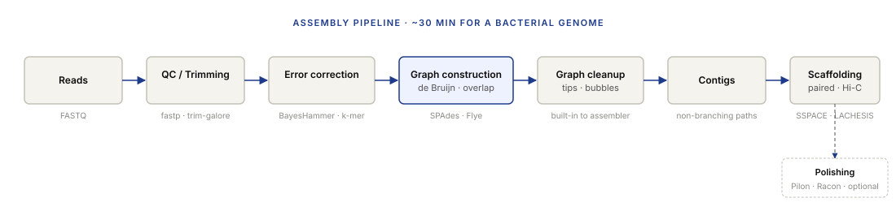
1.4 Reads and read types for assembly
Not all reads are equally useful for assembly. The relevant axes are length, accuracy, and whether the reads come in pairs.
- Short accurate reads (Illumina, 150–300 bp, ≤0.5% per-base error). Cheap, deep, low error. Bad at repeats longer than 300 bp. Dominant for bacterial and small-eukaryote assembly.
- Long noisy reads (PacBio CLR, Oxford Nanopore raw, 10–100 kb, 5–15% raw error). Span most repeats. Noise corrects out with consensus (§2.3). Essential for mammalian-genome assembly.
- Long accurate reads (PacBio HiFi, 10–25 kb, <0.1% error). The best of both worlds, at a price premium. The current gold standard for de novo mammalian assembly.
- Paired-end / mate-pair reads. Two reads from opposite ends of a single fragment; the distance between them is roughly known. Paired-end inserts are 300–600 bp, mate-pair ("jumping library") inserts are 2–40 kb. Paired information helps bridge short-repeat gaps; mate-pair information helps scaffold.
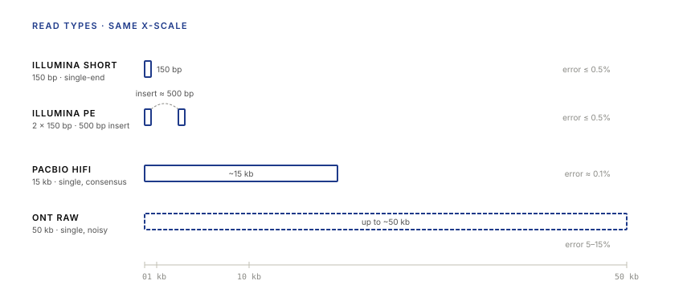
Part 2 · 30 min Data Before Assembly
2.1 Coverage and average coverage
Before any assembly algorithm runs, the raw reads are characterised by one summary number more than any other: coverage.
Coverage at a position is the number of reads that span that position. Averaged across the genome, it's the average coverage or depth:
For a 5 Mb bacterial genome sequenced with 100,000 Illumina 150 bp reads, average coverage is 100,000 × 150 / 5,000,000 = 3×. For a typical WGS run that value is 30× to 60×.
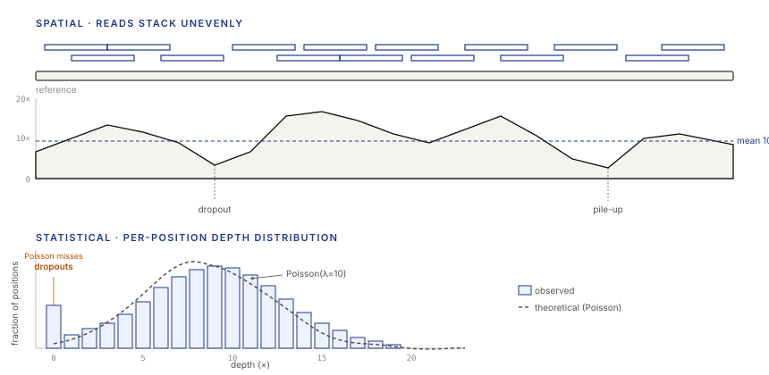
The practical rule of thumb: average coverage is a weak summary. It tells you nothing about uniformity. An assembly with 30× average can be unassemblable if the coverage is distributed as 0× across 10% of the genome and 33× across the rest. Always look at the coverage histogram, not just the mean.
2.2 Uniformity and coverage dropouts
The Poisson model assumes reads are drawn uniformly at random. They are not.
Three sources of non-uniformity matter in practice:
- GC bias. PCR amplification during library prep is more efficient on moderate-GC fragments than on very high-GC or very low-GC regions. Extreme-GC regions end up under-represented by a factor of two to ten. This is the dominant cause of short-read assembly gaps in real genomes.
- Repeat collapse. Reads from repetitive elements map equivocally to multiple positions. Some pipelines weight them fractionally, some drop them, some assign them randomly — and the resulting coverage at repeat positions can look artificially low.
- Strand bias and read-end effects. The first and last few bases of a read have elevated error rates and can be trimmed aggressively, which concentrates coverage in the middle of reads and leaves the outer edges thin.
The cleanup for GC bias is a second PCR-free library prep (or a PCR-free chemistry like 10X Genomics or PCR-free Illumina kits). The cleanup for repeats is long reads. There is no cleanup for strand bias — you tolerate it.
2.3 Error correction
Raw short reads have per-base error rates of roughly 0.1–1%. A 150 bp read therefore has on average 0.15 to 1.5 errors. Long raw reads from ONT can have 5–15% error. Feed these reads directly into a de Bruijn graph and the graph will be littered with spurious edges — each error creates a wrong k-mer that branches off the true path.
Before graph construction, every production assembler corrects the reads. The standard technique is k-mer spectrum analysis.
How k-mer error correction works, in three steps:
- Count every k-mer in every read. For a 5 Mb genome with 30× coverage and k = 21, you get a k-mer frequency histogram with two populations: a peak around frequency 30 (true k-mers, each seen about 30 times because of coverage) and a long tail at frequencies 1 and 2 (erroneous k-mers, each a unique typo produced by a single read error).
- Set a threshold. K-mers with frequency below the threshold (say, 3) are presumed to be errors. K-mers above it are presumed to be true.
- For every read, walk across the read character by character. When you hit an error k-mer, try single-base substitutions and look for the one that produces a true k-mer. Replace the offending base and move on.
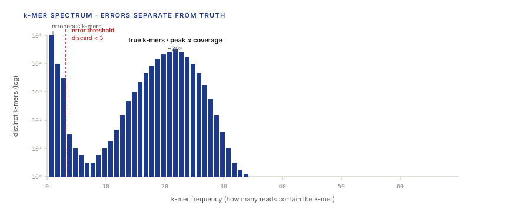
Modern assemblers (SPAdes, Canu, Flye) do this automatically with BayesHammer or similar Bayesian corrector. You don't typically run it as a separate step; you benefit from it implicitly.
Part 3 · 50 min Graph Theory for Assembly
3.1 A detour through graph theory
Before de Bruijn graphs, a minimum viable vocabulary for the rest of the lecture.
A graph is a set of nodes connected by edges. Edges can be directed (A → B) or undirected (A – B). Graphs can have cycles (paths that return to their starting node) or be acyclic. Nodes can have labels or attributes. Edges can have weights.
Three observations matter for what follows:
- Graphs are everywhere in EE: circuit topology, control-flow diagrams of a program, the state-transition diagram of a finite-state machine, the Markov chain of a channel, the trellis of a Viterbi decoder.
- Two kinds of path show up constantly: an Eulerian path visits every edge exactly once; a Hamiltonian path visits every node exactly once. Which one you need reshapes the algorithm — §3.3 and §3.4 use this.
- The degree of a node is the number of edges touching it. For directed graphs, you have in-degree and out-degree separately. Graph algorithms usually look at degree as their first signal.
3.2 De Bruijn graphs
Here is the idea that made modern short-read assembly feasible.
Given a set of reads and a parameter k, the de Bruijn graph has:
- One node per distinct (k−1)-mer that appears as a prefix or suffix of some k-mer in the reads.
- One directed edge per distinct k-mer in the reads, connecting the node labeled with its first (k−1) characters to the node labeled with its last (k−1) characters.
That's it. Two-line definition. Implementations vary in how they store it, but the concept is this simple. Figure 6 walks through the construction from three small reads and shows why the assembled sequence falls out of the graph: walk every edge exactly once, keep the last character of each node you enter, and the genome emerges.
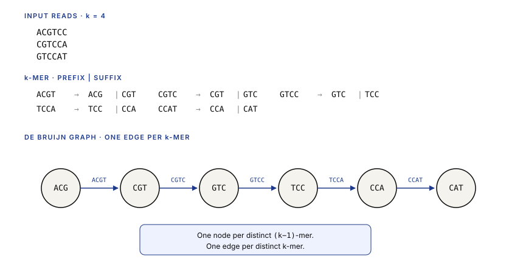
3.3 Solving de Bruijn graphs: Eulerian paths
Once you have the graph, the assembly problem reduces to: find a path that walks every edge exactly once. This is called an Eulerian path.
Euler (the Euler) proved in 1735 — studying whether you could walk all seven bridges of Königsberg without crossing any of them twice — that an Eulerian path exists in a connected graph if and only if every node has even degree, or exactly two nodes have odd degree (and those two are the start and end of the path). For directed graphs: in-degree equals out-degree everywhere, or exactly two nodes have imbalanced degree by one (one source, one sink).
The construction, Hierholzer's algorithm, is linear-time: start at the source, walk edges until you return to your starting point (forming a cycle), then for any remaining unvisited edges, find an intermediate node on your current path that has one and splice a new cycle in there. O(|E|) — for a bacterial genome at 30× coverage and k = 25, that's about 1.5 × 10⁸ edges, a few seconds on modern hardware.
3.4 Overlap graphs
The older, more intuitive way to formalize assembly.
An overlap graph has:
- One node per read.
- One edge from read a to read b if the suffix of a matches the prefix of b for at least some threshold length w.
To assemble, find a Hamiltonian path in this graph — a path that visits every read exactly once. Concatenate the reads along the path (with overlaps merged) and you have the genome.
This is the Overlap-Layout-Consensus (OLC) approach used by Celera (the software that assembled the human genome for Celera Genomics in 2001) and still used by modern long-read assemblers like Canu, Flye, and miniasm.
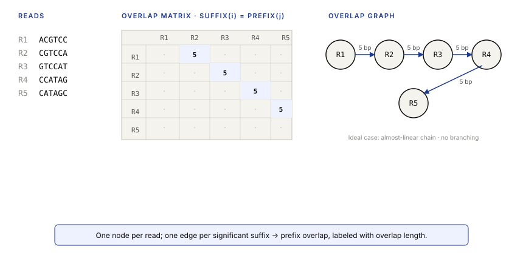
The catch is Hamiltonian: NP-hard in general. In practice, long-read assemblers exploit the fact that the graph is usually almost-linear (each read has exactly one or two high-confidence overlap neighbors), so a greedy heuristic does well. When it doesn't — at repeats — the graph diverges and the assembler reports the ambiguity rather than guessing.
3.5 Overlap vs de Bruijn: when to use which
The choice is almost never free. Read length forces it.
| Attribute | De Bruijn graph | Overlap graph |
|---|---|---|
| Node is a | (k−1)-mer | read |
| Edge is a | k-mer (single overlap between two k-mer contexts) | read-to-read suffix-prefix overlap |
| Construction | O(total read length) | O(reads²) naive; O(reads · log reads) with indexing |
| Search | Eulerian path (polynomial) | Hamiltonian path (NP-hard; heuristic in practice) |
| Memory | Scales with graph size, not read count | Scales with read count |
| Best for | Short accurate reads (Illumina) | Long reads (PacBio, ONT) |
Part 4 · 50 min Contig Construction
4.1 From graph to contigs
The graph is not the assembly. The assembly is a set of strings — contigs — each representing a region of the genome the assembler is confident in.
A contig is produced by walking a non-branching path through the graph: a maximal path where every internal node has exactly one in-edge and one out-edge. The walk terminates at a branch point (where the node has multiple out-edges or multiple in-edges) or at a dead end. Each non-branching path becomes one contig.
Why break at forks? Because forks are exactly the places where more than one reconstruction is consistent with the reads. The assembler could guess, but guessing hides the uncertainty. Producing two separate contigs at a fork is the honest output.
For a clean bacterial genome with 30× coverage and no repeats longer than the read length, the de Bruijn graph is close to a single linear path — one contig, the whole genome. Real genomes are not like that. Real genomes have repeats, errors, and structural variation, and the graph has forks.
4.2 Graph topology: tips, bubbles, and tangles
Three patterns of "not-a-linear-path" show up in every assembly graph. Learn to recognize them.
- Tips are short dead-end branches a few edges long. They come from single sequencing errors near the end of a read — the error creates a unique k-mer that branches off the true path and then terminates because no other read extends it. Cleanup: remove any tip shorter than a threshold (typically 2·k).
- Bubbles are parallel paths between the same pair of branch nodes. They come from SNPs (one read is heterozygous, one isn't), from repeats of exactly the wrong length, or from small indels. Cleanup: identify the two paths, compare their coverage, keep the higher-coverage one, collapse the bubble.
- Tangles are densely interconnected subgraphs with many in- and out-edges. They come from repeats — every copy of a repeat collapses onto the same path in the graph, and the reads coming into the repeat can exit through any of the copies. Cleanup: no clean cleanup. Report as an unresolved region; use long reads or paired-end information to try to walk it.
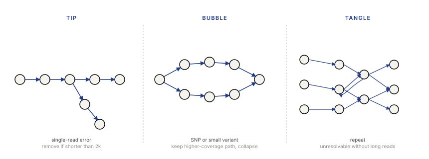
4.3 Repeats and ambiguity
Repeats are the fundamental obstacle to assembly. Everything else is engineering; repeats are physics.
A repeat is a sequence that appears in the genome more than once, at different positions. Examples in the human genome: Alu elements (300 bp, ~1 million copies, ~10% of the genome), LINEs (6 kb, ~500,000 copies, ~20% of the genome), centromeric satellite repeats (arrays of short motifs stretching for megabases), segmental duplications (large blocks of 10 kb or more with >90% identity).
Here's why they break assembly. Take two identical copies of a 500 bp repeat, located at positions X and Y in the genome. For any k ≤ 500, every k-mer in the repeat appears in both copies. In the de Bruijn graph, the two copies collapse into a single path — the graph has one path for the repeat, with the two upstream-of-the-repeat regions converging into it and the two downstream-of-the-repeat regions diverging out of it. The assembler can tell that the repeat is there, but it can't tell which upstream belongs to which downstream.
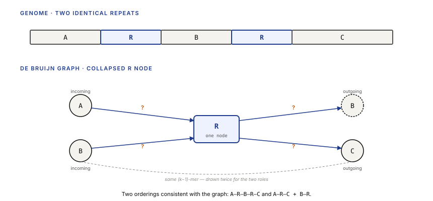
Assemblers handle repeats in three ways, in increasing order of honesty:
- Collapse and report. The repeat appears once in the assembly with elevated coverage. This is what short-read-only assemblers do for long repeats. The copy number is lost.
- Fork and report both. The assembler emits two contigs at the repeat boundary and marks them as alternate paths. This requires reasoning about coverage.
- Span with long reads. A read that is longer than the repeat unambiguously resolves the copy. This is why long-read assembly is necessary for any mammalian genome.
4.4 Gaps and scaffolding
After contig construction and graph cleanup, the assembler has a set of contigs. These contigs are ordered and oriented with respect to the genome only within the limits of the read data. Unresolved repeats, coverage gaps, and low-information regions all break contig contiguity.
Scaffolding is the post-step of ordering and orienting contigs across the unresolved regions, using information that was ignored during graph construction.
The two workhorses:
- Paired-end reads. A pair of reads from the same ~500 bp fragment. If one read maps to contig A and the other to contig B, you know A and B are within ~500 bp of each other and you can order them.
- Mate-pair libraries. Same idea, larger inserts — 2 kb to 40 kb. The long inserts jump over short repeats that paired-ends can't bridge.
Modern equivalents include Hi-C (chromosomal-conformation capture, which links contigs that are near each other in 3D even across megabases) and optical maps (Bionano) which provide long-range order information orthogonal to the reads.
The output of scaffolding is a scaffold: a sequence consisting of contigs linked by gaps. Gaps are filled with N characters whose length is the estimated gap size from the linking evidence. A scaffold of length 2 Mb might be 1.8 Mb of real sequence and 0.2 Mb of N's distributed across a dozen gaps.
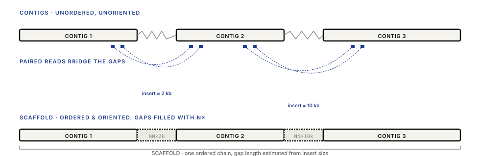
Part 5 · 35 min Whole Genome Shotgun and Quality Control
5.1 De novo whole-genome shotgun assembly
Putting all of Parts 1–4 together: here's how a bacterial genome gets assembled end-to-end.
- Extract DNA; fragment it to 300–500 bp; build a sequencing library; sequence on Illumina to get ~30× of 150 bp reads. Cost: roughly $100 for a small bacterial genome in 2024.
- Run
fastpon the reads for adapter trimming and quality filtering. Drop reads shorter than 50 bp. - Run SPAdes with
--isolate(or--careful) mode. SPAdes internally runs BayesHammer error correction, builds de Bruijn graphs at several k values, merges them, cleans tips and bubbles, emits contigs. - (Optional) Sequence a second library of mate-pairs or do a PacBio HiFi run for scaffolding.
- Run a scaffolder (SSPACE, BESST, or SPAdes's own) to order and orient contigs.
- Run
PilonorRaconto polish any remaining single-base errors. - Run
QUAST(§5.2) to compute metrics.
Total compute for a 5 Mb bacterial genome: roughly 30 minutes on a modern laptop. The same pipeline on a 3 Gb mammalian genome requires 100× the compute, multi-day runtime, and long reads throughout; typical modern runs use PacBio HiFi with the HiCanu or hifiasm assembler.
5.2 Assembly metrics: N50, NGx, consistency, coverage
How do you tell a good assembly from a bad one?
N50 is the dominant summary. Definition: sort contigs by length, largest first; walk down the list adding up lengths; N50 is the length of the contig at which the running total first exceeds half of the total assembly length. Equivalently: the length L such that contigs of length ≥ L cover at least 50% of the total assembly.
NG50 is the same idea but using expected genome size as the denominator instead of total assembly length. Useful because you can compare NG50 across different assemblers and different assemblies of the same genome.
Nx for other x. N90 is the length at which 90% of the assembly is covered. N10 is the length at which 10% of the assembly is covered. The full curve of Nx as x varies from 0 to 100 is more informative than any single N50.
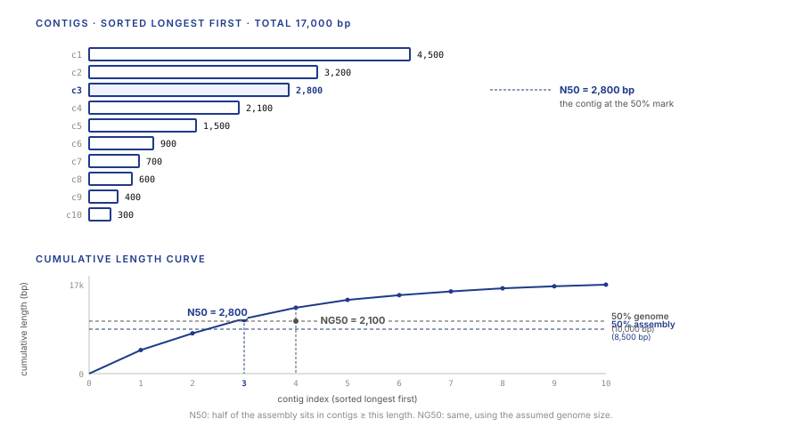
Other metrics to know:
- Assembly consistency is the fraction of the assembly that aligns correctly to a reference (when one exists for comparison). Requires a trusted reference.
- Genome coverage or completeness is the fraction of the expected genome that the assembly covers. For a bacterial genome of 5 Mb with total assembly 4.8 Mb, completeness is 96%. Tools like BUSCO use expected single-copy orthologs to estimate completeness without needing the full reference.
- Misassembly count is the number of places the assembly disagrees with a reference in ways not explainable by real variation — inverted segments, translocated segments, spurious junctions. Computed by tools like QUAST.
5.3 BAM outputs from an assembly pipeline
After assembly, the next step is almost always to align the reads back to the assembly — to polish, to estimate per-contig coverage, to detect residual errors, to check for sample contamination. Those alignments land in BAM files (the binary, indexed form of SAM; Lecture 1 covered the field layout). The useful tools for assembly work are the same family as in resequencing:
samtools sort/index— prepare the BAM for fast per-region access.samtools depth— per-position coverage, the input to every assembly-QC plot.samtools flagstat— sanity-check mapping rates and pair concordance.bcftools mpileuporDeepVariant— call variants from the pileup if you're calling against the assembly itself.
Wrap-up · 10 min Takeaways, homework, and next lecture
What you should take away
- De novo assembly is template-free reconstruction. When no reference is available, assembly is the only way to get a sequence, and the problem is fundamentally harder than resequencing.
- The de Bruijn graph is the central algorithmic idea of short-read assembly. It turns reconstruction into an Eulerian-path problem, which is polynomial-time and scales to mammalian genomes. Every major short-read assembler since 2008 uses it.
- Repeats are the limit. No algorithm fully resolves repeats longer than the read length. Long reads, paired-end reads, and Hi-C all help; none of them solve it. Assembly-with-gaps is the honest output.
- Coverage is a Poisson process with systematic non-uniformity. Mean is a weak summary; the distribution — and especially its left tail at low coverage — tells you where the assembly is going to fail.
- N50 is median contig length, weighted by length. Useful but gameable. Always pair it with total length, contig count, and genome fraction.
Next lecture
Variant calling: given aligned reads on a reference (from Lecture 2) or an assembly (this lecture), identify where the sample differs. SNPs, indels, structural variants. The statistical machinery of Bayesian genotype callers.
Homework
- Download a small bacterial genome (E. coli K-12, ~4.6 Mb). Simulate 30× Illumina-style reads at 150 bp with
wgsim(default error rate). - Assemble the simulated reads with SPAdes in isolate mode. Report: number of contigs, largest contig, N50, NG50, total assembly length. Compare to the true genome length. (Use the Assembly Metrics Calculator in §5.2 to verify your N50/NG50 by pasting the contig lengths.)
- By hand, construct the de Bruijn graph (k = 4) from these three reads:
ACAGACGT,CAGACGTA,AGACGTAC. Draw the graph. Find the Eulerian path. Read off the contig. - Explain in one paragraph why a perfect tandem repeat of exactly (k − 1) base pairs will NOT collapse in a de Bruijn graph with parameter k. (Hint: think about what happens to the k-mer at the boundary.)
Recommended reading
- Compeau, P. E. C., Pevzner, P. A., & Tesler, G. (2011). How to apply de Bruijn graphs to genome assembly. Nature Biotechnology 29, 987–991.
- Idury, R. M., & Waterman, M. S. (1995). A new algorithm for DNA sequence assembly. Journal of Computational Biology 2, 291–306.
- Myers, E. W., Sutton, G. G., Delcher, A. L., et al. (2000). A whole-genome assembly of Drosophila. Science 287, 2196–2204. (The Celera paper.)
- Bankevich, A., Nurk, S., Antipov, D., et al. (2012). SPAdes: a new genome assembly algorithm and its applications to single-cell sequencing. Journal of Computational Biology 19, 455–477.
- Koren, S., Walenz, B. P., Berlin, K., et al. (2017). Canu: scalable and accurate long-read assembly. Genome Research 27, 722–736.
- SAM/BAM specification: samtools.github.io/hts-specs/SAMv1.pdf
Appendix — timing summary
| Block | Time | Cumulative |
|---|---|---|
| Part 1 — The Assembly Problem | 30 min | 0:30 |
| Part 2 — Data Before Assembly | 30 min | 1:00 |
| Part 3 — Graph Theory for Assembly | 50 min | 1:50 |
| Part 4 — Contig Construction | 50 min | 2:40 |
| Part 5 — WGS and Quality Control | 35 min | 3:15 |
| Wrap-up | 10 min | 3:25 |
Total: ~3h 25min of content.